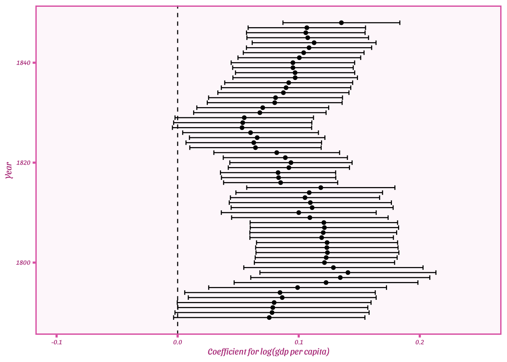

numbers <- 1:10000Iteration
Motivation
We often need to apply the same functions to multiple values. Most of our time working in R, we will do this without giving a second thought as functions are vectorized: when we apply the function to a vector it will actually apply the function to each element of the vector.
For instance, let’s say we have this vector which consists of all integers starting at 1 and ending at 10000:
Let’s say we want to take the natural logarithm of each of these numbers. We would simply run:
log_numbers <- log(numbers)The function log() is vectorized so it operates on each element of number and creates a new vector, which we decided to call log_numbers. This feature is an important strength of R as it makes our code fast to write and run and easy to both write and read.
Alas, sometimes we still need to repeatedly run the same functions.
Consider, for instance, the function read_dta() from the package haven. This function takes a single Stata (.dta) file and loads it to R as data.frame. But what if we have many .dta-files?
In the directory “..data/wealth_and_democracy” we have 60 .dta-files each containing data for one of the years in the period 1789 to 1848. Each file contains all countries included in the Historical Varieties of Democracy data (Knutsen et al. 2019) for that particular year, the country’s score on the polyarchy index in that year, and an estimate of its gross domestic product per capita. We can load the file for 1789 like this:
library(haven)
countries_1789 <- read_dta("../data/wealth_and_democracy/wealth_and_democracy_in_1789.dta")
head(countries_1789)# A tibble: 6 × 5
country_name country_id year v2x_polyarchy e_gdppc
<chr> <dbl> <dbl> <dbl> <dbl>
1 Mexico 3 1789 0.028 1.35
2 Sweden 5 1789 0.188 1.69
3 Japan 9 1789 0.026 1.21
4 Russia 11 1789 0.029 1.58
5 Egypt 13 1789 0.033 1.12
6 Poland 17 1789 0.199 1.00It is also straightforward to get a vector of all the file names in the directory using the dir() function:
file_names <- dir("../data/wealth_and_democracy/")
print(file_names) [1] "wealth_and_democracy_in_1789.dta" "wealth_and_democracy_in_1790.dta"
[3] "wealth_and_democracy_in_1791.dta" "wealth_and_democracy_in_1792.dta"
[5] "wealth_and_democracy_in_1793.dta" "wealth_and_democracy_in_1794.dta"
[7] "wealth_and_democracy_in_1795.dta" "wealth_and_democracy_in_1796.dta"
[9] "wealth_and_democracy_in_1797.dta" "wealth_and_democracy_in_1798.dta"
[11] "wealth_and_democracy_in_1799.dta" "wealth_and_democracy_in_1800.dta"
[13] "wealth_and_democracy_in_1801.dta" "wealth_and_democracy_in_1802.dta"
[15] "wealth_and_democracy_in_1803.dta" "wealth_and_democracy_in_1804.dta"
[17] "wealth_and_democracy_in_1805.dta" "wealth_and_democracy_in_1806.dta"
[19] "wealth_and_democracy_in_1807.dta" "wealth_and_democracy_in_1808.dta"
[21] "wealth_and_democracy_in_1809.dta" "wealth_and_democracy_in_1810.dta"
[23] "wealth_and_democracy_in_1811.dta" "wealth_and_democracy_in_1812.dta"
[25] "wealth_and_democracy_in_1813.dta" "wealth_and_democracy_in_1814.dta"
[27] "wealth_and_democracy_in_1815.dta" "wealth_and_democracy_in_1816.dta"
[29] "wealth_and_democracy_in_1817.dta" "wealth_and_democracy_in_1818.dta"
[31] "wealth_and_democracy_in_1819.dta" "wealth_and_democracy_in_1820.dta"
[33] "wealth_and_democracy_in_1821.dta" "wealth_and_democracy_in_1822.dta"
[35] "wealth_and_democracy_in_1823.dta" "wealth_and_democracy_in_1824.dta"
[37] "wealth_and_democracy_in_1825.dta" "wealth_and_democracy_in_1826.dta"
[39] "wealth_and_democracy_in_1827.dta" "wealth_and_democracy_in_1828.dta"
[41] "wealth_and_democracy_in_1829.dta" "wealth_and_democracy_in_1830.dta"
[43] "wealth_and_democracy_in_1831.dta" "wealth_and_democracy_in_1832.dta"
[45] "wealth_and_democracy_in_1833.dta" "wealth_and_democracy_in_1834.dta"
[47] "wealth_and_democracy_in_1835.dta" "wealth_and_democracy_in_1836.dta"
[49] "wealth_and_democracy_in_1837.dta" "wealth_and_democracy_in_1838.dta"
[51] "wealth_and_democracy_in_1839.dta" "wealth_and_democracy_in_1840.dta"
[53] "wealth_and_democracy_in_1841.dta" "wealth_and_democracy_in_1842.dta"
[55] "wealth_and_democracy_in_1843.dta" "wealth_and_democracy_in_1844.dta"
[57] "wealth_and_democracy_in_1845.dta" "wealth_and_democracy_in_1846.dta"
[59] "wealth_and_democracy_in_1847.dta" "wealth_and_democracy_in_1848.dta"However, loading all these files is not as straightforward. If we try to read multiple .dta-files at once using
1paths <- paste("../data/wealth_and_democracy/", file_names, sep = "")
2all_years <- read_dta(paths)- 1
-
Here we use
paste()to create a vector with the paths to all the different.dta-files - 2
- We attempt to load all the files in one go, but this fails!
Error in `read_dta()`:
! This kind of input is not handled.How then can we load all the different files? We could start with the code we used to load the file for 1789, copy-paste it 60 times, and edit the different file names. This process is, however, both cumbersome and error prone.
A much better would be to use one of the different iteration tools in R.
for-loops
A for-loop does the operation(s) you tell it to do for all the elements in a vector. For instance, we can write a for-loop to print all the integers between -5 and 5:
- 1
-
We write that we want to something
forall elementsiin the vector-5:5. After the curly bracket ({), we can start defining what to do. - 2
-
Here we define what to do. We simply want to
print(i). - 3
- The curly bracket closes the loop, meaning that we are done defining what should happen to each element i.
[1] -5
[1] -4
[1] -3
[1] -2
[1] -1
[1] 0
[1] 1
[1] 2
[1] 3
[1] 4
[1] 5
You don’t have loop over
i
There is nothing magical about i, we could have just as well written:
for(number in -5:5){
print(number)
} [1] -5
[1] -4
[1] -3
[1] -2
[1] -1
[1] 0
[1] 1
[1] 2
[1] 3
[1] 4
[1] 5or whatever we find intuitive. Using i is just a convention.
Now that we know the basic of for-loops, let’s see if we can write a loop that loads all our 60 .dta-files. To that we need a vector with the paths to all the files. We already have the paths vector, which we can use. A loop that only loads the files would then look like this:
- 1
-
For each element
iinpaths, - 2
-
read the
.dta-file for the elementi. - 3
-
That’s it. Go back to the top and do the next element
iif there are more of them.
Of course, just loading all the files is not terribly useful unless we also assign them to objects. For that we we will need a vector of object names:
object_names <- paste("countries", 1789:1848, sep = "_")
print(object_names) [1] "countries_1789" "countries_1790" "countries_1791" "countries_1792"
[5] "countries_1793" "countries_1794" "countries_1795" "countries_1796"
[9] "countries_1797" "countries_1798" "countries_1799" "countries_1800"
[13] "countries_1801" "countries_1802" "countries_1803" "countries_1804"
[17] "countries_1805" "countries_1806" "countries_1807" "countries_1808"
[21] "countries_1809" "countries_1810" "countries_1811" "countries_1812"
[25] "countries_1813" "countries_1814" "countries_1815" "countries_1816"
[29] "countries_1817" "countries_1818" "countries_1819" "countries_1820"
[33] "countries_1821" "countries_1822" "countries_1823" "countries_1824"
[37] "countries_1825" "countries_1826" "countries_1827" "countries_1828"
[41] "countries_1829" "countries_1830" "countries_1831" "countries_1832"
[45] "countries_1833" "countries_1834" "countries_1835" "countries_1836"
[49] "countries_1837" "countries_1838" "countries_1839" "countries_1840"
[53] "countries_1841" "countries_1842" "countries_1843" "countries_1844"
[57] "countries_1845" "countries_1846" "countries_1847" "countries_1848"Since object_names is a character vector, we cannot use <- to assign each file to the right object in the loop. Instead we will use the function assign() which takes an object name, x, in the form of a character string and a value. It will then assign whatever is in value to whatever name is in x in the global environment.
Since we are now working with two vectors (paths and object_names) in the loop, we will loop over integer from 1 to their length() (which should be 60 for both vectors) and use indexing to grab the right element in each iteration of the loop:
for(i in 1:length(paths)){
assign(x = object_names[i],
value = read_dta(paths[i]))
}When running the loop above, 60 different datasets are loaded and assigned to objects in our global environment. For instance, we will now have an object called countries_1802:
head(countries_1802)# A tibble: 6 × 5
country_name country_id year v2x_polyarchy e_gdppc
<chr> <dbl> <dbl> <dbl> <dbl>
1 Mexico 3 1802 0.028 1.32
2 Sweden 5 1802 0.189 1.49
3 Switzerland 6 1802 0.188 2.01
4 Japan 9 1802 0.028 1.26
5 Russia 11 1802 0.02 1.58
6 Egypt 13 1802 0.032 1.08We probably didn’t load all these datasets just for the fun of it.
Perhaps our reason for loading all these different .dta files was that we want to estimate linear regression model for the bivarate relationship between wealth (as captured by log(gross domestic product per capita)) and democracy (as captured by the polyarchy index)). We will consider wealth as the independent variable and democracy as the independent variable (although this relationship could arguably also work in the opposite direction). For each regression we want to save the coefficient for log(gross domestic product per capita) and its standard error.
Again, we don’t want to write out the code for a regression model 60 times only changing which dataset it is estimated on. It would be great if we also could estimate model and retrieve the coefficient of interest inside the loop. Can we?
A good way to start is to write out the code for what we would like to do for a single dataset. Let’s do the year 1814:
1library(broom)
2dataset <- read_dta("../data/wealth_and_democracy/wealth_and_democracy_in_1814.dta")
3regression_model <- lm(v2x_polyarchy ~ log(e_gdppc), data = dataset)
4tidy(regression_model)
5tidy(regression_model)[2, c("estimate", "std.error")]- 1
-
The
broompackage is great for converting the objects of regression models intodata.frames that are easy to work with in R - 2
- We load the data
- 3
- We estimate the model
- 4
-
Just to illustrate:
tidy()frombroomproduces a nice littledata.frame(or technically, atibble, but that’s just a type ofdata.frame) based on our model. Thisdata.frameis easy to work with. - 5
-
We can subset the
data.frameproduced bytidy()frombroomto grab the coefficient and standard error we are interested in.
# A tibble: 2 × 5
term estimate std.error statistic p.value
<chr> <dbl> <dbl> <dbl> <dbl>
1 (Intercept) 0.0433 0.0154 2.80 0.00875
2 log(e_gdppc) 0.109 0.0309 3.52 0.00141
# A tibble: 1 × 2
estimate std.error
<dbl> <dbl>
1 0.109 0.0309A next useful step is to see if we can rewrite this code just from the paths vector and save the result in a convenient way.
1estimates <- data.frame(coefficient = rep(NA, times = length(paths)),
standard_error = rep(NA, times = length(paths)))
2dataset <- read_dta(paths[26])
3regression_model <- lm(v2x_polyarchy ~ log(e_gdppc), data = dataset)
4estimates[26,] <- tidy(regression_model)[2, c("estimate", "std.error")]- 1
-
We create a
data.frameto store the results in. We want one row per element inpathsso we uselength(path)to determine the number of rows. We want to variablescoefficientandstandard_error. We don’t know what values are yet (that’s what we are trying to figure out!), so we just fill thedata.framewithNAs for now. - 2
-
We load
paths[26], i.e. the 26th element ofpathsand assign it todataset - 3
-
We estimate the regression model, using
datasetas the data. - 4
-
We store the coefficient and standard error for
log(e_gdppc)to the 26th row ofestimates.
1for(i in 1:nrow(estimates)){
2 dataset <- read_dta(paths[i])
3 regression_model <- lm(v2x_polyarchy ~ log(e_gdppc), data = dataset)
4 estimates[i,] <- tidy(regression_model)[2, c("estimate", "std.error")]
}- 1
-
We loop over all the numbers from 1 to the number of rows in
estimates(we could also have used the length ofpaths). - 2
-
We load the element
iofpathsand save it todataset. We did this for every iteration, so we will continuously overwritedataset. - 3
-
We estimate the model using whatever data is currently stored as
datasetand assign itregression_model.regression_modelwill also be overwritten for each iteration. - 4
-
Finally we save the coefficient and standard error to the
ith row ofestimates. Becauseiis changing for each iteration. These results will not be overwritten. Instead they will be saved inestimates
The first rows of estimates look like this:
head(estimates) coefficient standard_error
1 0.07566119 0.04031438
2 0.07796730 0.04090374
3 0.07859954 0.04003433
4 0.07971598 0.04083772
5 0.08638019 0.03958585
6 0.08455238 0.04014866We can now use this data.frame to, let’s say, make a Barbie-themed (Jané 2023) coefficient plot displaying the coefficient and 95% confidence interval for each year from 1789 to 1848. We will cover how to make such plots later, so for now we have hidden the code (if you wish, you may, however, click on the “Code” button to display the code for the plot).
Code
library(ggplot2)
library(ThemePark)
estimates$year <- 1789:1848
estimates$lower <- estimates$coefficient - 1.96 * estimates$standard_error
estimates$upper <- estimates$coefficient + 1.96 * estimates$standard_error
ggplot(estimates,
aes(x = coefficient,
xmin = lower,
xmax = upper,
y = year))+
geom_vline(xintercept = 0, linetype = "dashed")+
geom_errorbar()+
geom_point()+
xlab("Coefficient for log(gdp per capita)")+
ylab("Year")+
xlim(-0.10, 0.25)+
theme_barbie(barbie_font = TRUE) 
The apply() family of functions
for-loops run relatively slowly in R. This doesn’t matter if you are only looping over a few element and each step doesn’t take a lot of time for your computer to complete, but for-loops don’t scale all that well.
What is R is good at is applying functions to vectors. So, it will be useful to consider alternatives to for-loops that play on this strength:
One such alternative is the apply family of function, which is available in base R. The function lapply() will take a list or vector, apply some function to all elements in that list or vector, and return a list with the results.
So let’s say we again have the vector -5:5 consisting all integers from -5 to 5. We want to divide all of them by 2. Using lapply() we may:
lapply(X = -5:5, FUN = function(x){x/2})[[1]]
[1] -2.5
[[2]]
[1] -2
[[3]]
[1] -1.5
[[4]]
[1] -1
[[5]]
[1] -0.5
[[6]]
[1] 0
[[7]]
[1] 0.5
[[8]]
[1] 1
[[9]]
[1] 1.5
[[10]]
[1] 2
[[11]]
[1] 2.5The result will be a list of the same length as -5:5 and each element will contain the corresponding element in the original vector divided by 2. On its own, this is not terribly impressive, we might as well have run -5:5/2. But just like for a for-loop the advantage is found in how we can extend the logic to other types of inputs.
We could for write a function that given a path, will load a .dta-file found in that path, estimate a regression model with v2x_polyarchy as the dependent variable and log(e_gdppc) and extract the coefficient and standard error for log(e_gdppc). We can lapply this function to all the elements of our vector paths:
1coefficients_and_standard_errors <- lapply(X = paths,
2 FUN = function(x){
3 dataset <- read_dta(x)
regression_model <- lm(v2x_polyarchy ~
log(e_gdppc), data = dataset)
tidy(regression_model)[2, c("estimate", "std.error")]
})- 1
-
We need to specify the argument
X(notice the upper case X), which should be a list or atomic vector to apply the function to. - 2
-
We need to specify the argument
FUNwe specify the function that should be applied to all elements inX. We can define our own function, which is what we use here (using the skills we already picked up here) - 3
-
Our function, takes the argument
xand for eachxloads a dataset usingread_dta(), estimates or regression model on that dataset usinglm(), extracts the coefficient of interest usingtidy()frombroomand some basic subsetting.
The object coefficients_and_standard_errors is a list and each element of the list is a data.frame with the one coefficient and one standard error. For instance, we will find our coefficient and standard error for the year 1814 in the 26th element like before:
coefficients_and_standard_errors[26][[1]]
# A tibble: 1 × 2
estimate std.error
<dbl> <dbl>
1 0.109 0.0309Using the functions do.call() and rbind(), we may combine all the elements of list together in one data.frame. do.call() takes two functions: a function and a list of elements to apply the function to. Here we will supply the function rbind that binds different data.frames together by the rows and our list (coefficients_and_standard_errors) of data.frames we would like to combine:
- 1
-
First we specify what function should applied. Here we use
rbind()which bindsdata.frames together. It is the base R equivalent of thedplyr::bind_rowswhich we will spend more time on later. - 2
-
We then specify the list of arguments to the function (here
rbind). Since each element in the list is adata.frame, what we are doing here is to tell R to bind all thesedata.frames together.
# A tibble: 6 × 2
estimate std.error
<dbl> <dbl>
1 0.0757 0.0403
2 0.0780 0.0409
3 0.0786 0.0400
4 0.0797 0.0408
5 0.0864 0.0396
6 0.0846 0.0401Thus, we managed to do exactly what we did in the for-loop above using lapply(). This is great news as using the apply functions can be much more efficient than writing for-loops in R.
lapply() is not the only apply() function. apply will take a data.frame or matrix and apply some function across the rows or across the columns. This can be useful for instance when computing summary statistics. Let’s calculate the mean() for both v2x_polyarchy and e_gdppc in countries_1814
- 1
-
give
apply()adata.frameormatrix. Here we subsetcountries_1814to only contain the variablesv2x_polyarchyande_gdppc. - 2
-
We specify 1 if we want the function to be done by the rows and 2 if it should be done by columns. Here we specify 2 because we want the
mean()for each column - 3
-
Finally we specify the function we want to
apply(), here we usemean().
v2x_polyarchy e_gdppc
0.074000 1.447563 sapply() is like lapply() but will simplify the result to be an atomic vector or a matrix instead of a list. Thus, if we had written the code dividing all the integers in -5:5 by 2 using sapply() instead of lapply(), we would have produced a nice numeric vector instead of a list:
sapply(X = -5:5, FUN = function(x){x/2}) [1] -2.5 -2.0 -1.5 -1.0 -0.5 0.0 0.5 1.0 1.5 2.0 2.5If our goal is to produce a variable for a data.frame, making a vector with sapply() is often better than making a list with lapply().
The purrr package
The purrr package provides an even more comprehensive set of tools for using functions to do various iterative tasks in R (and thus avoiding for-loops).
The workhorse function of purrr is the map()-function which works very similarly to the apply-functions in base R. map() takes the argument .x which should be provided a list or atomic vector and .f which should be function. The function will be applied to each element of .x and map() will retun a list with the results.
Let’s try to take all the integers in -5:5 and divide by 2:
- 1
-
Remember to load the
purrrpackage! - 2
-
Supply your vector to
.x! - 3
-
Supply your function to
.f. You can define your own function as we do here or provide the name of a function.
[[1]]
[1] -2.5
[[2]]
[1] -2
[[3]]
[1] -1.5
[[4]]
[1] -1
[[5]]
[1] -0.5
[[6]]
[1] 0
[[7]]
[1] 0.5
[[8]]
[1] 1
[[9]]
[1] 1.5
[[10]]
[1] 2
[[11]]
[1] 2.5It is sometimes inconvenient that map() returns a list. Often we want an atomic vector (like an numeric or character vector) instead. purrr also has a series of map_*-functions that return specific types of vectors. For instance, map_dbl will return a numeric vector (the numeric data type is also called “double”):
map_dbl(.x = -5:5,
.f = function(x){
x/2}
) [1] -2.5 -2.0 -1.5 -1.0 -0.5 0.0 0.5 1.0 1.5 2.0 2.5Similarly, map_chr will return a character vector (but purrr doesn’t like it when we implicitly coerce a numeric vector to a character vector and will spit out a warning to complain) :
map_chr(.x = -5:5,
.f = function(x){
x/2}
)Warning: Automatic coercion from double to character was deprecated in purrr 1.0.0.
ℹ Please use an explicit call to `as.character()` within `map_chr()` instead. [1] "-2.500000" "-2.000000" "-1.500000" "-1.000000" "-0.500000" "0.000000"
[7] "0.500000" "1.000000" "1.500000" "2.000000" "2.500000" The function map_vec will work with any kind of vector and return a vector of the same data type as it was supplied.
map_vec(.x = -5:5,
.f = function(x){
x/2}
) [1] -2.5 -2.0 -1.5 -1.0 -0.5 0.0 0.5 1.0 1.5 2.0 2.5So can we load our datasets and estimate our regression models using purrr Of course we can! Using only map, we can create a list with all the coefficients and standard errors (just like we did with lapply())
1coefficients_and_standard_errors_from_map <- map(.x = paths,
2 .f = function(x){
dataset <- read_dta(x)
regression_model <- lm(v2x_polyarchy ~
log(e_gdppc), data = dataset)
tidy(regression_model)[2, c("estimate", "std.error")]
})- 1
-
We supply our
pathsvector to.x - 2
-
We supply our function for loading the data, estimating the model, and retrieving the output we care about to
.fcoefficients_and_standard_errors_from_mapis a list with each element containing adata.framethe coefficient and standard error for one of the 60 models we just ran.
The purrr package also contains a set of functions for working with the lists that we will tend to produce when using map(). For instance, reduce() will combine all the elements of a list you provide (to its .x argument) using some function (that you supply to its .f argument). So, we can use reduce() together with rbind() to produce a single data.frame:
1coefficients_and_standard_errors_from_map <- reduce(.x = coefficients_and_standard_errors_from_map,
2 .f = rbind)
head(coefficients_and_standard_errors_from_map)- 1
-
We use
reduce()to combine all the elements of a list into a single value. We supply the list to.x. - 2
-
And we supply the function we will use to combine the elements to
.f.
# A tibble: 6 × 2
estimate std.error
<dbl> <dbl>
1 0.0757 0.0403
2 0.0780 0.0409
3 0.0786 0.0400
4 0.0797 0.0408
5 0.0864 0.0396
6 0.0846 0.0401References
Jané, Matthew B. 2023. “Theme_park: Popular Culture ggplot Themes.” https://github.com/MatthewBJane/theme_park.
Knutsen, Carl Henrik, Jan Teorell, Tore Wig, Agnes Cornell, John Gerring, Haakon Gjerløw, Svend-Erik Skaaning, et al. 2019. “Introducing the Historical Varieties of Democracy Dataset: Political Institutions in the Long 19th Century.” Journal of Peace Research 56 (3): 440–51.